보안 점검·하드닝
방화벽·IPS 정책 운영 — Palo Alto · SRX · Snort
이전 회사에서 방화벽(Palo Alto, Juniper SRX)과 IPS(WINS Sniper)를 운영하며 차단·허용 정책 등록과 차단 로그 확인을 맡았습니다. IPS 장비는 공개 자료가 거의 없어서, 같은 개념(패턴 블럭, WEB-CGI, 임계치 차단)을 공개 IPS인 Snort로 옮겨 정리했습니다.
장비 이름·IP·정책 이름·티켓 번호는 예시이며 화면도 예시입니다. 메뉴 이름은 장비 OS 버전에 따라 조금 다를 수 있습니다.
1. 구성과 역할
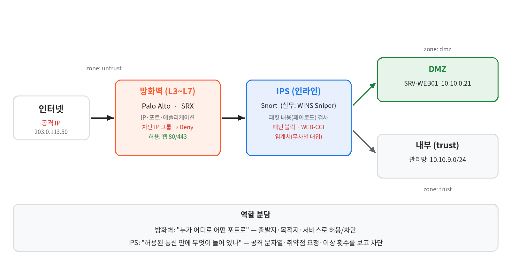
정책 작업 공통 순서
- 요청 확인: 차단·허용 대상 IP, 포트, 기간, 요청 근거(티켓·공문)
- 객체 선언: IP 주소, 주소 그룹, 서비스(포트) — 정책에 IP를 직접 쓰지 않고 이름 있는 객체로
- 정책 등록: 차단 정책은 허용 정책보다 위에 (위에서부터 처음 맞는 정책 적용)
- 변경 내용 확인 → 검사 → 적용 (Palo Alto: Preview/Validate → Commit, SRX: show | compare → commit check → commit confirmed)
- 로그로 확인: 의도한 통신이 차단·허용되는지, 엉뚱한 통신이 막히지 않는지
- 기록: 설명(Description)과 커밋 메모에 티켓 번호를 남겨 나중에 정리할 때 근거로 사용
2. Palo Alto — 객체 선언 (GUI)
IP 주소 객체: Objects → Addresses → Add
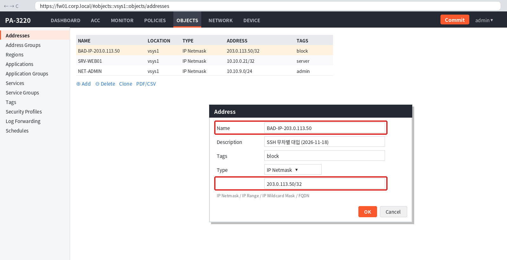
- Type: IP Netmask(단일 IP·대역), IP Range(시작~끝), FQDN(도메인 이름)
- 차단 IP는 Objects → Address Groups에서
BLOCK-LIST같은 그룹에 넣어 둡니다. 이후로는 정책을 고치지 않고 그룹에 주소만 추가하면 됩니다.
서비스(포트) 객체: Objects → Services → Add
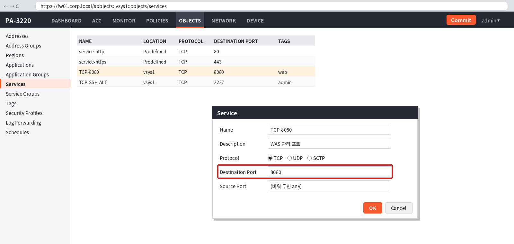
application-default로 두면 그 애플리케이션의 표준 포트에서만 허용되어, 다른 포트로 우회하는 통신을 막을 수 있습니다.3. Palo Alto — 차단 정책 등록과 순서
Policies → Security → Add. 기존 규칙을 선택한 채로 Add 하면 그 아래에 생기므로, 만든 뒤 Move → Move Top(또는 Move Up)으로 허용 규칙 위로 올립니다.
| 탭 | 차단 규칙 예 |
|---|---|
| General | Name Block-Bad-IP, Description 사유·티켓 번호 |
| Source | Zone untrust, Address BLOCK-LIST |
| Destination | Zone any, Address any |
| Application / Service | any / any |
| Actions | Action Deny, Log at Session End 체크, Log Forwarding(SIEM·syslog 전송) |
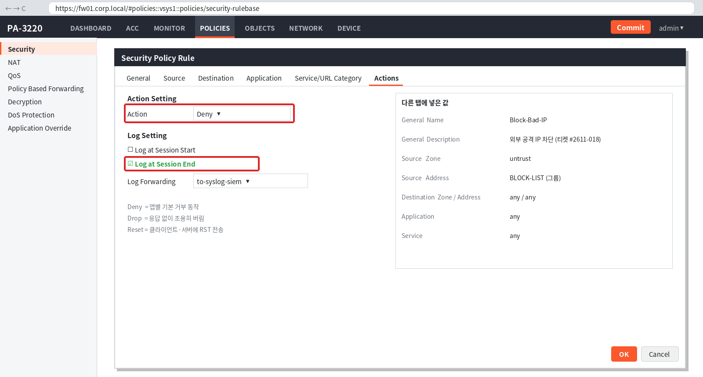
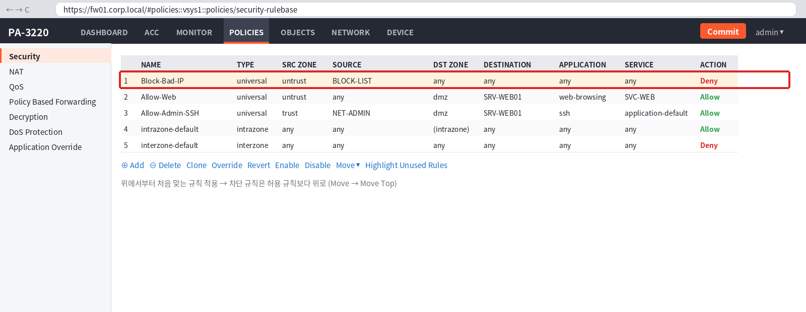
| Action | 동작 | 사용 |
|---|---|---|
| Deny | 애플리케이션별 기본 거부 동작 | 일반 차단 |
| Drop | 응답 없이 버림 | 외부 스캔·공격 IP (응답을 주지 않음) |
| Reset (client/server/both) | RST를 보내 즉시 끊음 | 내부 사용자 차단 (대기 시간 없이 실패를 알림) |
interzone-default(다른 존 간 기본 거부)는 기본으로 로그를 남기지 않습니다. 선택 후 Override → Actions에서 Log at Session End를 켜 두면 "아무 규칙에도 맞지 않아 막힌 통신"도 로그로 확인할 수 있습니다.4. Palo Alto — Commit과 되돌리기
GUI에서 바꾼 내용은 후보 설정에만 저장되고, 오른쪽 위 Commit을 눌러야 장비에 적용됩니다.
- Preview Changes: 현재 적용된 설정과 바뀐 줄 비교
- Validate Commit: 적용하지 않고 오류만 검사
- Description에 사유·티켓 번호 → Commit
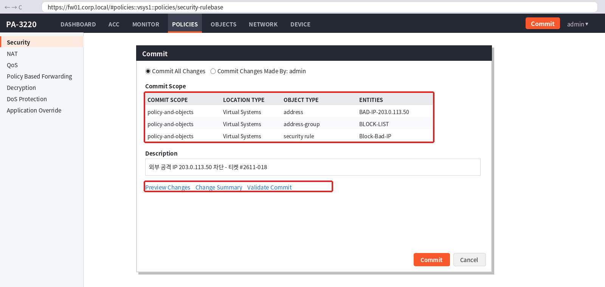
# 되돌리기 (GUI)
Config(오른쪽 위) → Revert Changes # 아직 Commit 하지 않은 변경 취소
Device → Setup → Operations → Load configuration version → 이전 버전 선택 → Commit
# 같은 작업 (CLI)
# load config version 15 # 15번 버전을 후보로 불러오기
# commit5. Palo Alto — 차단 로그 확인 (GUI)
Monitor → Logs → Traffic에서 필터를 입력합니다. 표의 주소·포트·규칙 셀을 클릭하면 필터에 자동으로 추가됩니다.
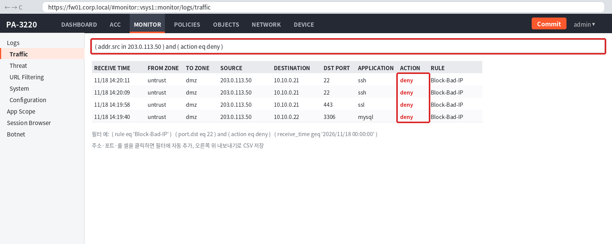
( addr.src in 203.0.113.50 ) and ( action eq deny ) # 특정 IP 의 차단 기록
( rule eq 'Block-Bad-IP' ) # 특정 규칙에 걸린 통신
( port.dst eq 22 ) and ( action eq deny ) # SSH 차단 기록
( zone.src eq untrust ) and ( receive_time geq '2026/11/18 00:00:00' )- 허용됐어야 하는 통신이 막혔다면 RULE 열에서 어느 규칙에 걸렸는지 보고 규칙 순서를 확인합니다.
- IPS·안티바이러스 등 보안 프로필로 막힌 것은 Monitor → Logs → Threat에 남습니다.
6. Juniper SRX — 객체 선언 (CLI)
admin@srx01> configure
# IP 주소 객체 (global address-book: 모든 존에서 사용)
set security address-book global address BAD-IP-203.0.113.50 203.0.113.50/32
set security address-book global address SRV-WEB01 10.10.0.21/32
set security address-book global address NET-ADMIN 10.10.9.0/24
# 주소 그룹 — 차단 IP 는 여기에만 추가
set security address-book global address-set BLOCK-LIST address BAD-IP-203.0.113.50
# 포트 객체 (기본 제공: junos-http, junos-https, junos-ssh, junos-mysql ...)
set applications application TCP-8080 protocol tcp destination-port 8080
set applications application-set APP-WEB application junos-http
set applications application-set APP-WEB application junos-https
set applications application-set APP-WEB application TCP-8080
# 확인
show security address-book global | display set
show applications | display set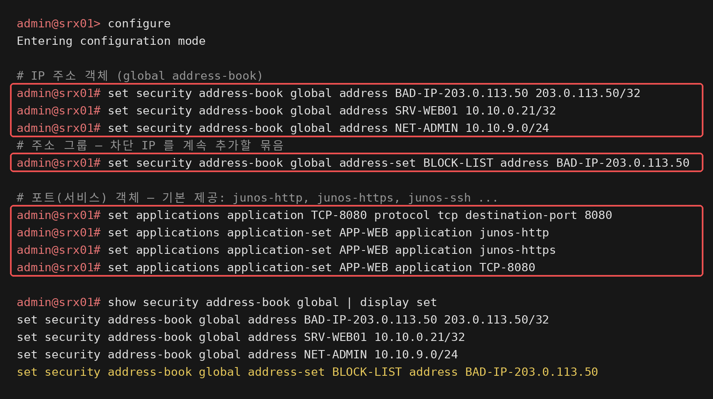
set security zones security-zone untrust address-book address ...)을 쓰고 있다면 같은 방식을 따라야 합니다. 한 장비에서 global과 존별 주소록을 섞어 쓸 수 없습니다.7. Juniper SRX — 차단·허용 정책과 insert
# 허용 정책 (기존)
set security policies from-zone untrust to-zone dmz policy ALLOW-WEB match source-address any destination-address SRV-WEB01 application APP-WEB
set security policies from-zone untrust to-zone dmz policy ALLOW-WEB then permit
set security policies from-zone untrust to-zone dmz policy ALLOW-WEB then log session-close
# 차단 정책 — set 으로 새로 만들면 해당 존 쌍의 "맨 아래" 에 붙음
set security policies from-zone untrust to-zone dmz policy DENY-BAD-IP match source-address BLOCK-LIST destination-address any application any
set security policies from-zone untrust to-zone dmz policy DENY-BAD-IP then deny
set security policies from-zone untrust to-zone dmz policy DENY-BAD-IP then log session-init
# 순서 변경 — 차단 정책을 허용 정책 위로
insert security policies from-zone untrust to-zone dmz policy DENY-BAD-IP before policy ALLOW-WEB
# 확인 (나열 순서 = 적용 순서)
show security policies from-zone untrust to-zone dmz | display set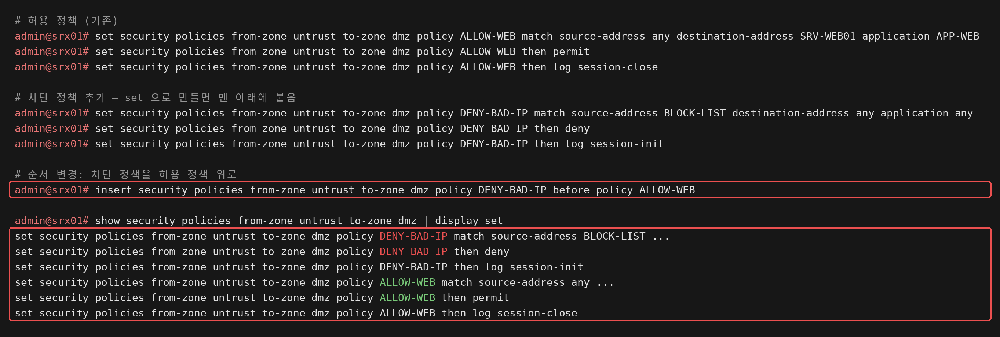
| then | 동작 |
|---|---|
permit | 허용 |
deny | 조용히 버림 |
reject | TCP RST / ICMP unreachable 응답 후 거부 |
log session-init | 세션 시작 시 로그 (차단 정책은 이것만 남음) |
log session-close | 세션 종료 시 로그 (허용 정책: 전송량·시간 포함) |
정책을 지우지 않고 잠시 끌 때는 deactivate security policies from-zone untrust to-zone dmz policy DENY-BAD-IP, 다시 켤 때는 activate.
8. Juniper SRX — commit check · commit confirmed · rollback
# 1) 바뀐 내용 확인
show | compare
# 2) 적용 없이 문법·참조 검사 (없는 객체 이름 등)
commit check
# 3) 원격 작업이면 자동 되돌림 예약 — 5분 안에 commit 을 다시 안 하면 이전 설정으로 복구
commit confirmed 5 comment "BLOCK 203.0.113.50 #2611-018"
# 4) 관리 접속·서비스가 정상이면 확정
commit
# 되돌리기 — rollback N 은 N번째 이전 커밋을 "후보 설정" 으로 불러올 뿐, commit 해야 적용
rollback 1
show | compare
commit
# 커밋 이력과 특정 버전 비교
run show system commit
show | compare rollback 2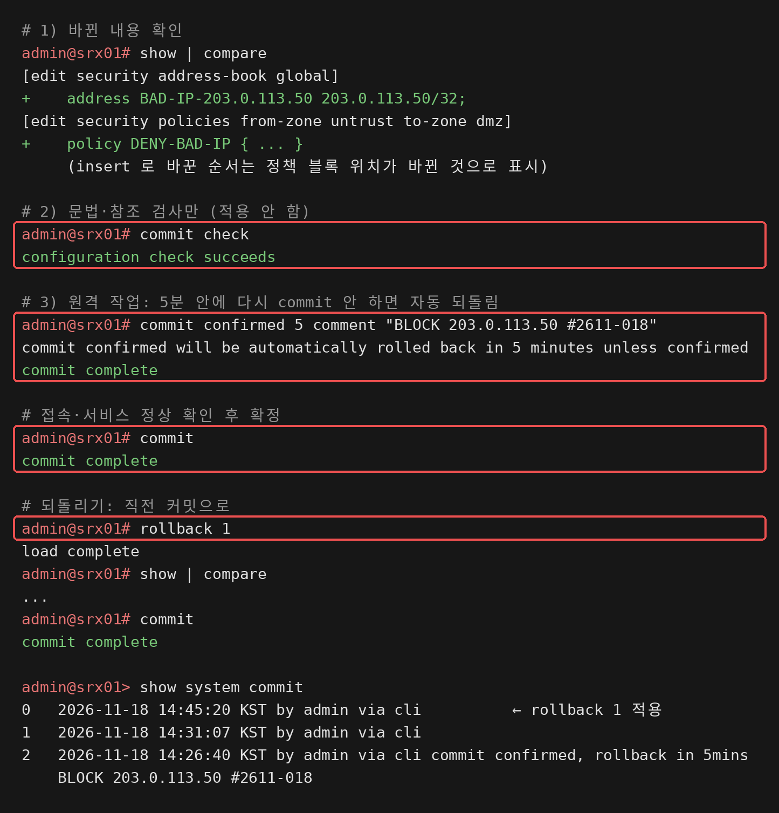
commit confirmed로 적용하면 접속이 끊겨 확정 commit을 못 해도 지정 시간 뒤 자동으로 원래 설정으로 돌아옵니다.9. Juniper SRX — 차단 로그 확인
# 세션 거부 로그만 로컬 파일로 남기기 (차단 정책에 then log session-init 필요)
set system syslog file traffic-log any any
set system syslog file traffic-log match RT_FLOW_SESSION_DENY
commit and-quit
# 확인
show log traffic-log | match 203.0.113.50 | last 20
monitor start traffic-log # 실시간 (중지: monitor stop)
# 정책별 적중 횟수 — 차단 정책이 실제로 동작하는지, 쓰이지 않는 정책이 무엇인지
show security policies hit-count from-zone untrust to-zone dmz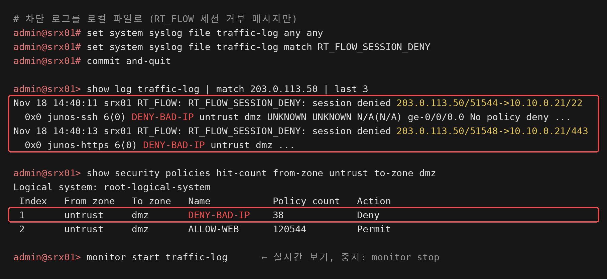
장기 보관·검색은 장비에 쌓지 않고 중앙 로그 서버(syslog)나 SIEM으로 보냅니다.
10. IPS — Snort로 보는 패턴 블럭 · WEB-CGI
WINS Sniper 같은 상용 IPS의 정책 화면에서 쓰던 패턴 블럭, WEB-CGI 같은 분류는 Snort에서도 같은 개념으로 만들 수 있습니다. 방화벽이 "어디서 어디로 몇 번 포트"를 본다면, IPS는 허용된 통신 안의 내용을 봅니다.
패턴 블럭과 WEB-CGI의 차이
| 패턴 블럭 | WEB-CGI | |
|---|---|---|
| 무엇인가 | 운영자가 직접 정한 문자열이 패킷에 보이면 차단하는 사용자 정의 규칙 | 제조사·룰셋이 제공하는 웹 CGI 취약점 공격 시그니처 분류 (예전 Snort 룰셋의 web-cgi.rules, 지금은 SERVER-WEBAPP 계열로 정리) |
| 검사 위치 | 프로토콜 해석 없이 패킷 내용 전체에서 문자열 검색 | HTTP를 해석해 URI·헤더 등 정해진 위치에서, URL 인코딩을 푼(정규화한) 뒤 검사 |
| 만드는 사람 | 운영자 (긴급 대응: 새 공격 문자열, 특정 악성 도메인·파일명) | 제조사·룰셋 (업데이트로 추가, 운영자는 켜기/끄기·예외 처리) |
| 장점 | 새 공격에 바로 대응, 어떤 프로토콜에도 적용 | 오탐이 적고, %2e%2e처럼 인코딩해 우회하는 공격도 잡음 |
| 주의 | 짧거나 흔한 문자열이면 정상 통신도 막힘(오탐), 인코딩 우회에 약함 | 새 취약점은 업데이트 전까지 못 잡음, 서비스와 무관한 시그니처는 꺼서 성능 확보 |
Snort 규칙 예
# /usr/local/etc/rules/local.rules
# (1) 패턴 블럭: 웹 포트로 들어오는 요청에 "cmd.exe" 가 보이면 차단
drop tcp $EXTERNAL_NET any -> $HOME_NET [80,8080] (msg:"PATTERN-BLOCK cmd.exe 문자열";
flow:to_server,established; content:"cmd.exe",nocase; sid:1000101; rev:1;)
# (2) WEB-CGI: HTTP URI 를 해석한 뒤 CGI 취약 경로 요청 차단
drop http (msg:"WEB-CGI phf access"; flow:to_server,established;
http_uri; content:"/cgi-bin/phf",nocase; classtype:web-application-attack; sid:1000201; rev:1;)
# (3) 임계치: 60초 안에 같은 출발지에서 SSH 연결 시도 5회 넘으면 차단
drop tcp $EXTERNAL_NET any -> $HOME_NET 22 (msg:"SSH brute force"; flow:to_server; flags:S;
detection_filter:track by_src, count 5, seconds 60; sid:1000301; rev:1;)
# (4) 탐지만: 새 규칙은 alert 로 며칠 지켜본 뒤 오탐이 없으면 drop 으로
alert http (msg:"WEB-CGI test-cgi probe"; http_uri; content:"/cgi-bin/test-cgi"; sid:1000202; rev:1;)| 요소 | 의미 |
|---|---|
drop / alert / reject | 차단 / 탐지만 / 차단 + RST 응답. drop은 인라인(IPS) 모드에서만 실제로 차단되고, 미러링(IDS) 모드에서는 로그만 남음 |
flow:to_server,established | 연결이 맺어진 뒤 클라이언트 → 서버 방향만 (오탐·부하 감소) |
content:"...",nocase | 찾을 문자열, 대소문자 무시 |
http_uri; | 이후 content를 HTTP URI(정규화된 값)에서만 찾음 |
detection_filter | 출발지별 횟수 기준을 넘은 뒤부터 동작 |
sid / rev | 규칙 번호(사용자 규칙은 1000000 이상) / 수정 차수 |
# 문법 검사
snort -c /usr/local/etc/snort/snort.lua -R /usr/local/etc/rules/local.rules -T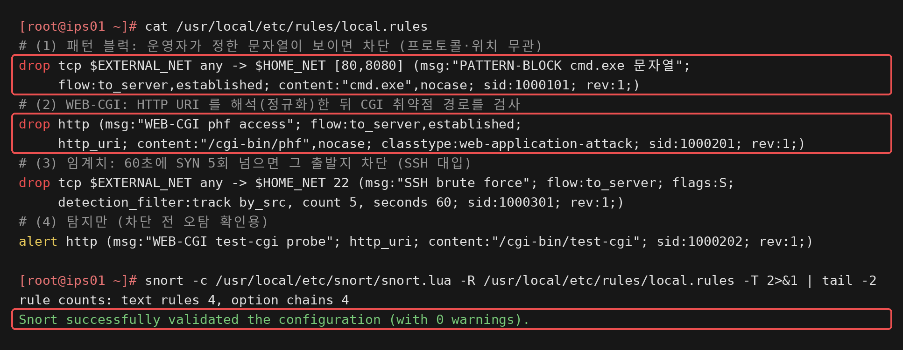
11. IPS — 인라인 차단과 로그 확인
# snort.lua — 인라인(IPS) 모드
ips = { mode = inline, variables = default_variables, include = RULE_PATH .. '/local.rules' }
# eth1 ↔ eth2 사이에 끼워 실행 (브리지처럼 통과시키며 검사)
snort -c /usr/local/etc/snort/snort.lua -Q --daq afpacket -i eth1:eth2 \
-A alert_fast -l /var/log/snort -D
# 차단 로그
tail -f /var/log/snort/alert_fast.txt
grep '\[Drop\]' /var/log/snort/alert_fast.txt | grep 203.0.113.77
# 규칙별 건수
grep -o '\[1:[0-9]*:[0-9]*\] "[^"]*"' /var/log/snort/alert_fast.txt | sort | uniq -c | sort -rn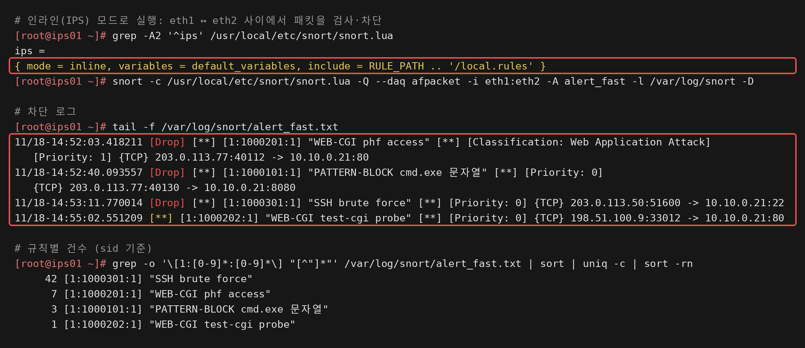
| 상용 IPS 화면에서 하던 일 | Snort에서는 |
|---|---|
| 탐지 모드 / 차단 모드 전환 | ips.mode = tap(탐지) / inline(차단), 규칙별 alert / drop |
| 사용자 정의 패턴 등록 | local.rules에 content·pcre 규칙 추가 |
| 시그니처 업데이트 | 룰셋(커뮤니티·구독) 내려받아 교체 (PulledPork 등) |
| 예외 IP 등록 | suppress 설정 또는 규칙의 출발지에서 제외(!) |
| 차단 IP 목록 | reputation 검사기의 blocklist 파일 |
| 탐지·차단 로그 조회 | alert_fast·alert_json 출력 → 로그 서버·SIEM으로 수집해 검색 |
12. 트러블슈팅
| 장비 | 증상 | 원인 및 해결 |
|---|---|---|
| 공통 | 차단 정책을 넣었는데 계속 통신됨 | 위쪽 허용 정책에 먼저 걸림 → 차단 정책 순서를 위로. 로그의 규칙 이름으로 확인 |
| 차단 후 다른 서비스까지 막힘 | 주소 객체를 너무 넓게(대역) 입력, 또는 목적지·서비스를 any로 둔 영향 범위 확인 부족 | |
| NAT 뒤 서버인데 정책이 안 맞음 | 정책의 목적지는 장비 기준(Palo Alto: NAT 전 주소 + NAT 후 존, SRX: NAT 후 주소) 확인 | |
| Palo Alto | Commit 실패 "is not a valid reference" | 삭제·이름 변경된 객체를 정책이 참조 → Validate Commit으로 확인 후 수정 |
| 차단 로그가 안 보임 | 규칙의 Log at Session End 해제, 기본 interzone 규칙은 기본으로 로그 없음 → Override | |
| SRX | commit check 오류 "address ... not found" | 주소록 종류 불일치(global ↔ 존별) 또는 오타 |
| 원격 작업 중 접속이 끊김 | commit confirmed로 적용했으면 지정 시간 뒤 자동 복구, 아니면 콘솔에서 rollback 1 → commit | |
| 로그가 안 쌓임 | 정책에 then log session-init 누락, syslog file 설정의 match 문자열 확인 | |
| Snort | drop 규칙인데 차단 안 됨 | IDS(미러링·tap) 모드로 동작 중 → -Q와 ips.mode = inline 확인 |
| 정상 사이트가 막힘 | 패턴 블럭 문자열이 너무 짧거나 흔함 → http_uri 등 위치 지정, 더 구체적인 문자열, 먼저 alert로 검증 | |
| 인코딩한 공격이 통과 | raw content 규칙은 URL 인코딩을 풀지 않음 → http_uri 같은 HTTP 버퍼 사용 |